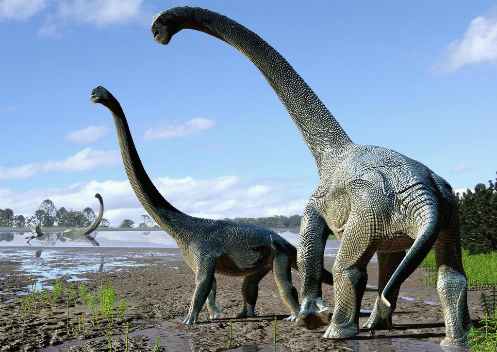
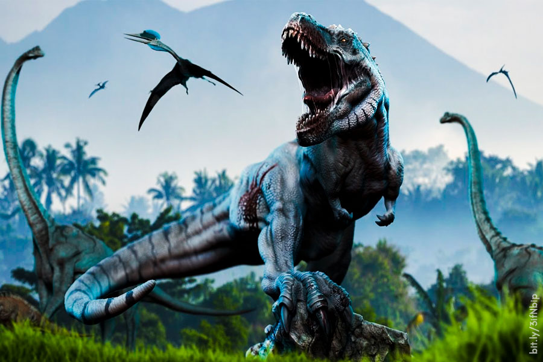
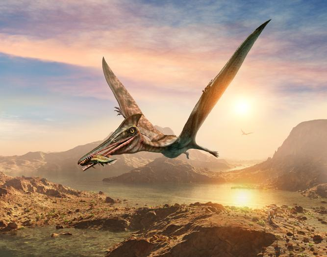
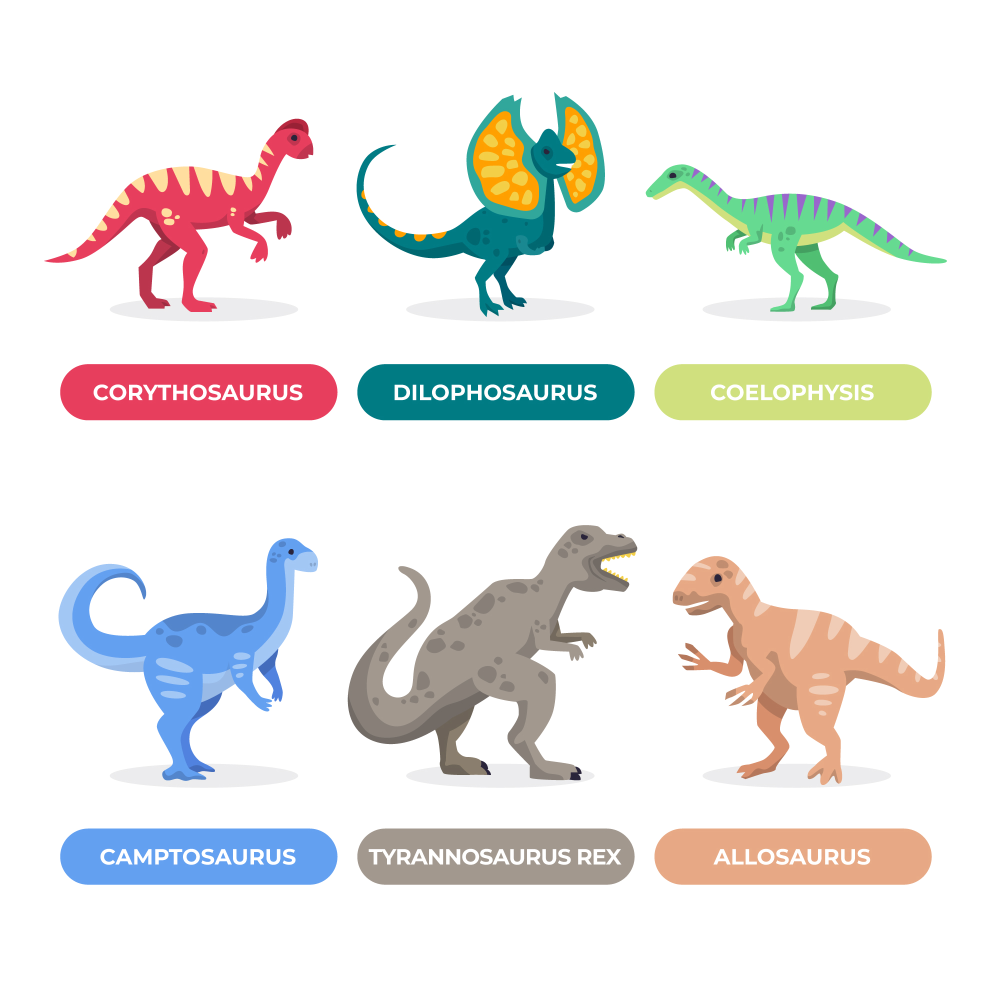
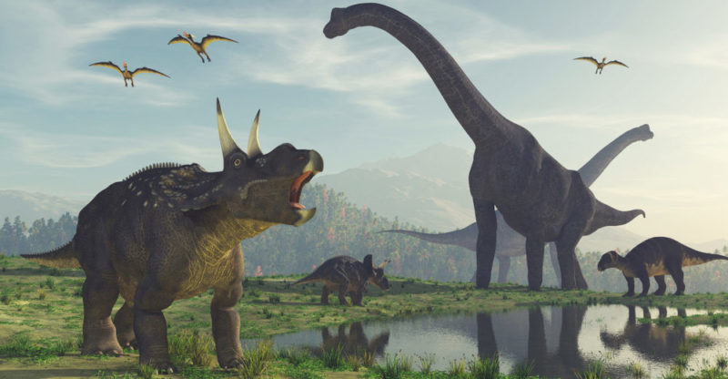

Tiranosaurio Rex, Triceratops y Diplodocus, pero hay muchos, muchos más. El Museo Americano de Historia Natural tiene registrado 700 especies de estos depredadores.



Según el Museo Americano de Historia Natural, en términos de dinosaurios no aviares extintos, se han descubierto y nombrado alrededor de 300 géneros válidos y aproximadamente 700 especies válidas. Sin embargo, dado que el registro fósil está incompleto, en el sentido de que los científicos aún tienen que descubrir más, estos números no reflejan la verdadera diversidad de los dinosaurios extintos.
Una razón por la que el registro fósil es incompleto es que las rocas de algunos períodos de tiempo geológico no se encuentran comúnmente en la superficie de la Tierra. Por ejemplo, se conocen muchos más tipos de dinosaurios del Cretácico Tardío que los del Jurásico Medio, porque los afloramientos del Cretácico Tardío son más numerosos y están más extendidos geográficamente que los del otro periodo.

El también llamado Tyrannosaurus rex significa el "Rey Lagarto Tirano", y difícilmente se le podría haber adjudicado un nombre mejor. Quien lo hizo fue Henry Fairfield Osborn, en 1905, entonces presidente del Museo Americano de Historia Natural.
